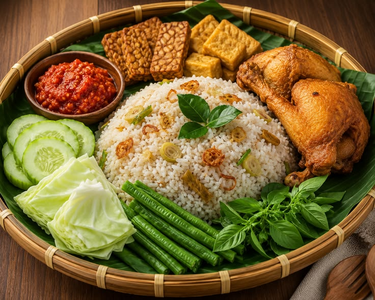

Nasi Rempah Kaciw
Nasi aromatik, ayam panggang, sambal kecombrang, dan acar segar.
Rp 48.000Restoran & ruang cerita
Selamat datang di rumah rasa Kaciw. Nikmati hidangan hangat, suasana yang akrab, dan momen yang ingin Anda ulangi.
Tentang kami
Kaciw Resto lahir dari kecintaan pada resep rumahan dan pertemuan yang bermakna. Kami memilih bahan terbaik, memasak dengan sabar, lalu menyajikannya untuk menemani cerita Anda.
Cerita lengkap kami ↗Pilihan hari ini
Racikan khas Kaciw untuk menemani momen kecil maupun perayaan besar.